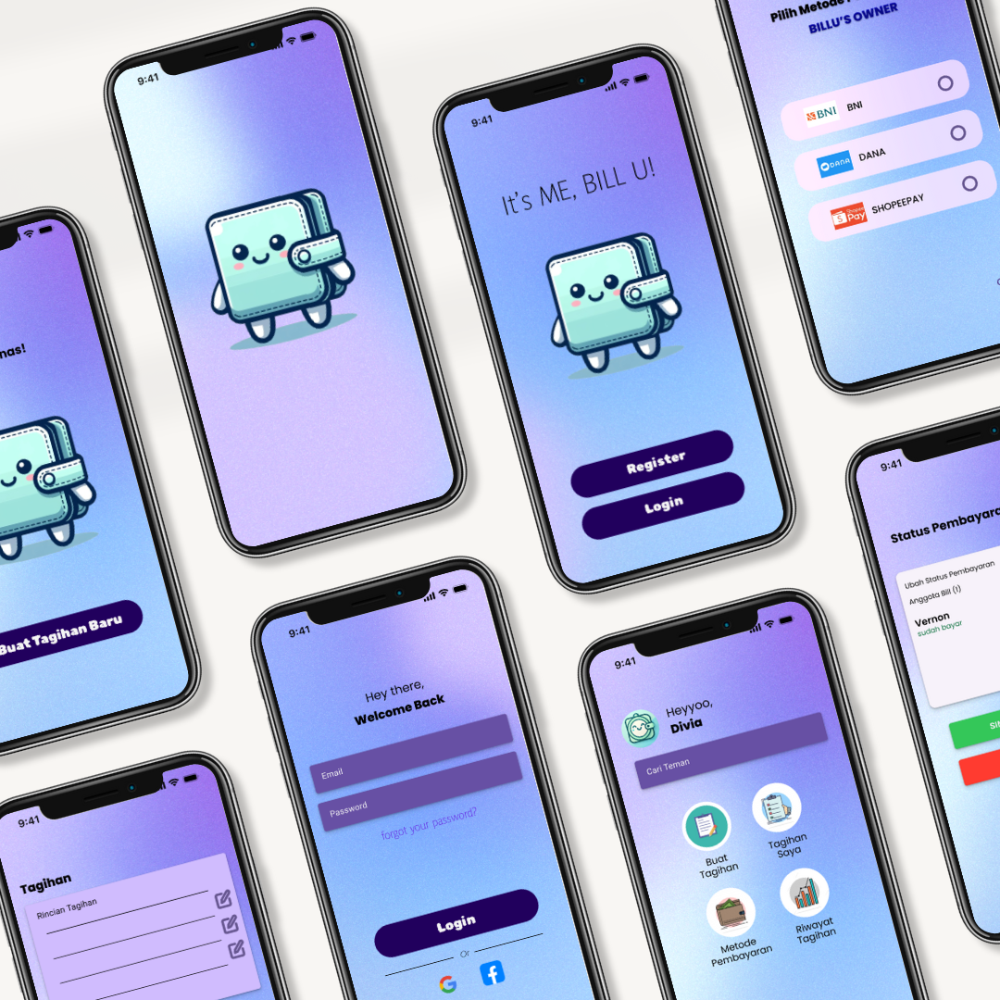
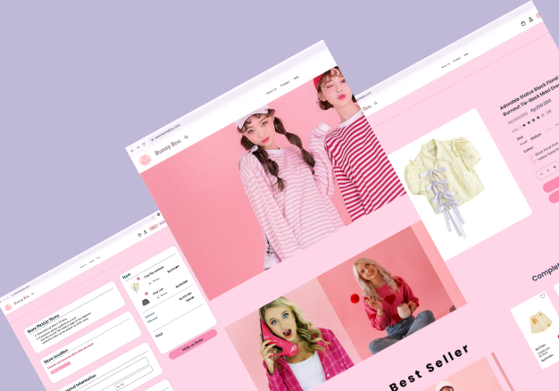
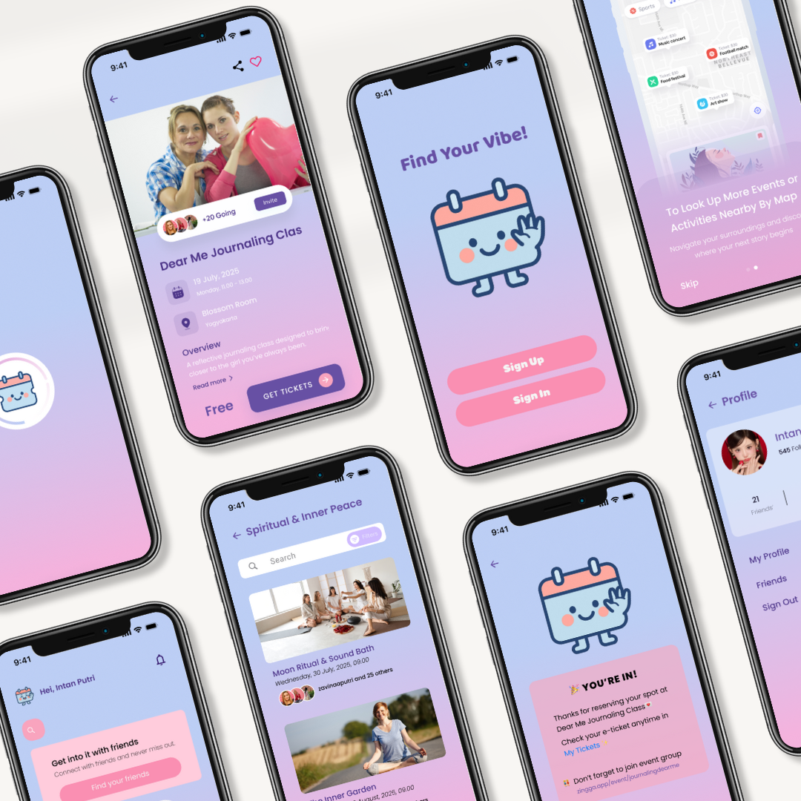
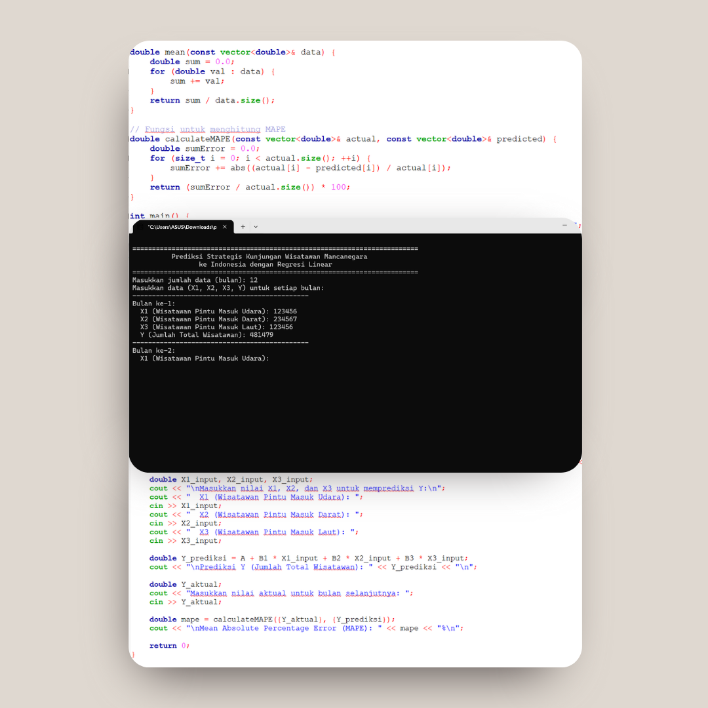
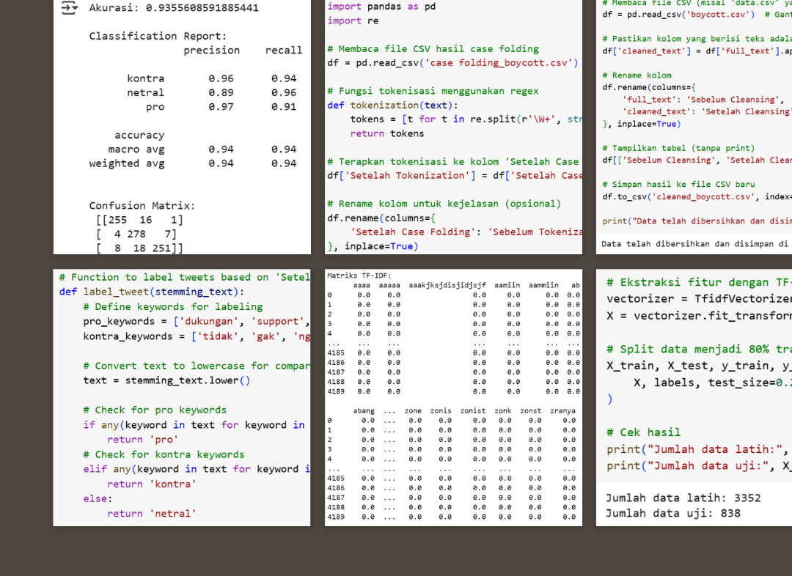
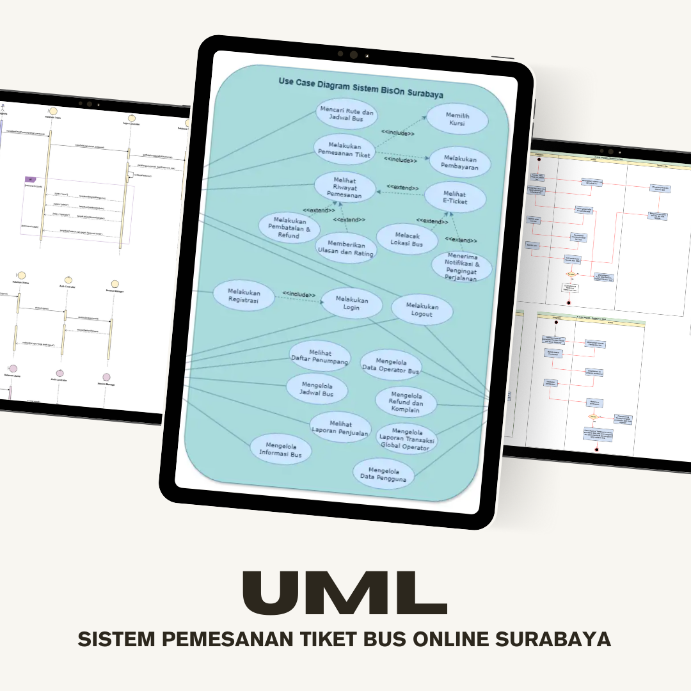

The UI/UX design of the “BILL U!” mobile app features an aesthetically pleasing, intuitive, and user-friendly interface to simplify the management of bills and digital payments made with figma.

The UI/UX design of the “BunnyBou” website features a soft, playful, and feminine aesthetic tailored for a boutique e-commerce experience. With a pastel pink color palette the design creates a cozy. The layout emphasizes user-friendliness with clear navigation, responsive product cards, and smooth checkout flow. Created with Figma, this design ensures both visual appeal and seamless shopping experience across devices.
Frontend design for the dessert brand “Sweet Chic” website, highlighting a sweet and elegant feel to strengthen the brand’s visual identity.

The UI/UX design of the “Zingga” mobile app features an aesthetically pleasing, intuitive, and user-friendly interface tailored for discovering events designed specifically for women. Created using Figma, the design emphasizes soft, feminine visuals and seamless navigation to enhance the user experience in finding empowering and enjoyable activities.
Fullstack design and development for the Ecoloco website, a CRUD-based waste deposit platform that manages user submissions, transaction records, and waste categories. The project integrates both frontend and backend, enabling users to add, edit, and track their waste deposits while admins can manage the system efficiently.

C++ based application to predict the total number of foreign tourists to Indonesia using linear regression utilizing three independent variables (X1: tourists from air entry points, X2: tourists from land entry points, X3: tourists from sea entry points) and one dependent variable (Y: total number of foreign tourists). This application also calculates prediction accuracy using MAPE (Mean Absolute Percentage Error).

This research is an implementation of artificial intelligence through a machine learning approach with the SVM algorithm, which the entire process is carried out using the Python programming language. Data was obtained by crawling the #Boycott product hashtag during January-April 2025, then processed with text preprocessing techniques, TF-IDF weighting, and data balancing using SMOTE. SVM models were tested with two kernels, namely linear and RBF.
This SRS document was prepared as part of the design project of BisOn, a web-based online bus ticket booking system. This system is designed to make it easier for people to find schedules, book tickets, select seats, make digital payments via QRIS, and track bus locations in real-time.

UML System Design for BISON includes Use Case, Activity, Class, and Sequence Diagrams that describe the flow of ticket booking, user interaction, and system data structure in a structured manner to support the digitalization of bus services.
This SRS document was prepared as part of the design project of BisOn, a web-based online bus ticket booking system. This system is designed to make it easier for people to find schedules, book tickets, select seats, make digital payments via QRIS, and track bus locations in real-time.